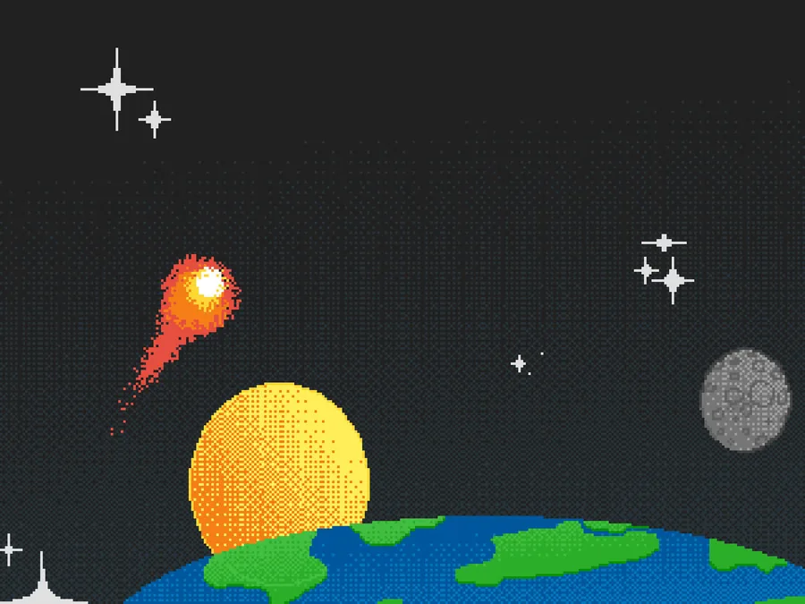
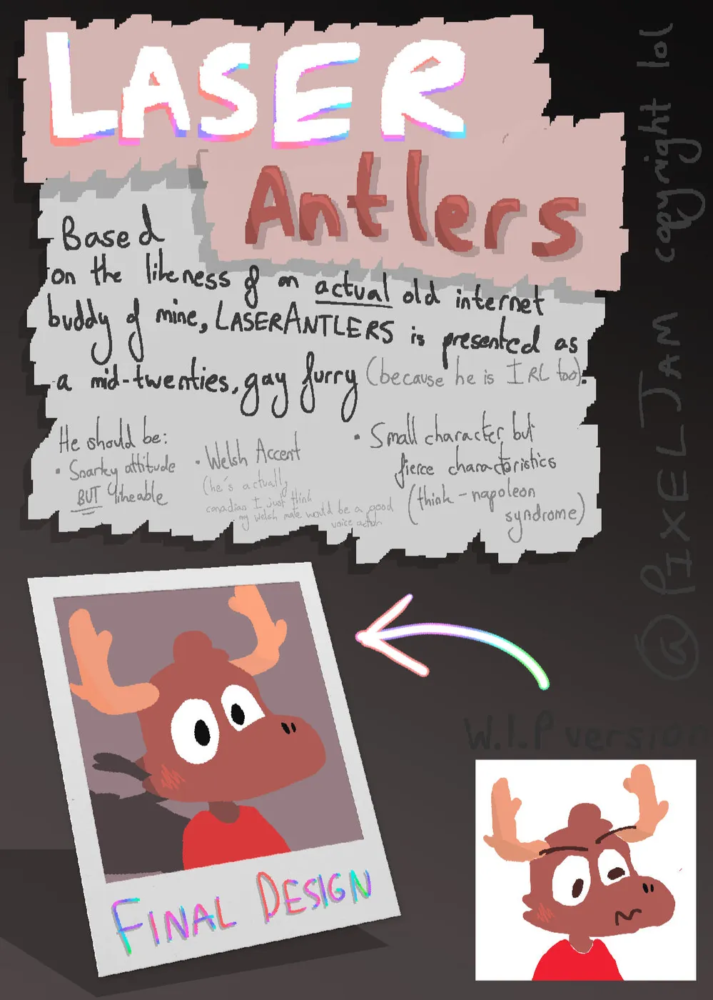
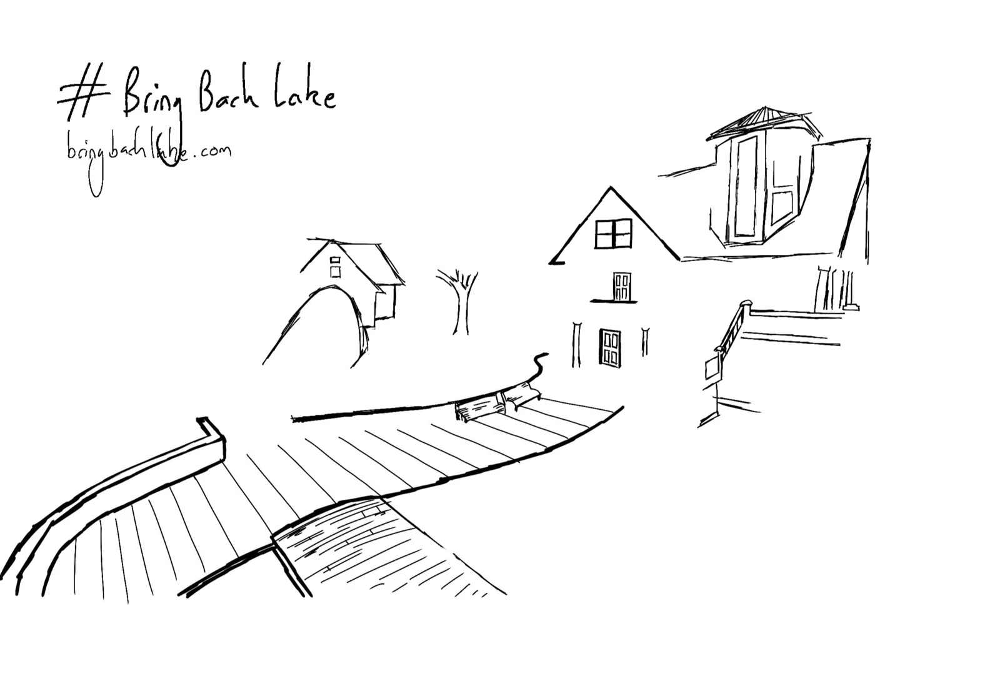
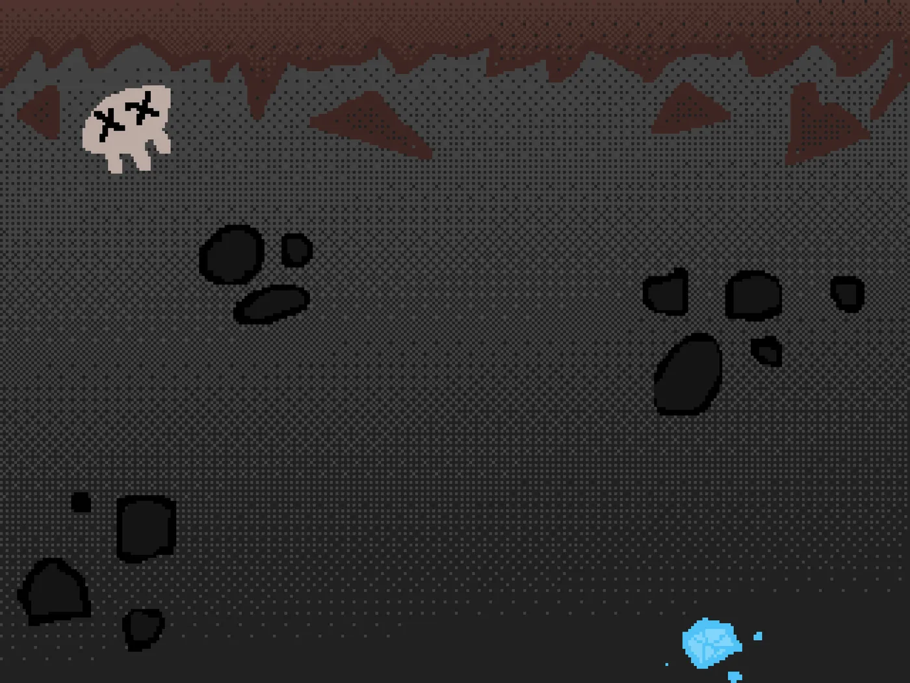
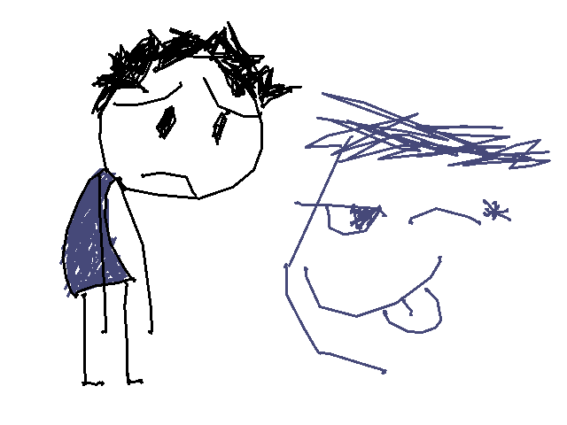

Software Engineer (Apprentice) @ Google · London, UK
Milo Tekchandani
I'm a software engineer at Google in London, on the Search app for mobile. Backend and infrastructure, mostly. So, google.com.
Away from that I build games with a couple of mates, run three machines off one Nix flake, and draw things when I can be bothered. Everything below is stuff I actually built.
work
The day job.
-
Google, Search
Software Engineer (Apprentice) on the Google Search app for mobile, backend and infrastructure side.
- Developer tooling for the people building AI Mode.
- Page transitions between the tabs on the search results page.
backendinfrastructuremobile
projects
Things I built and finished, or am still finishing.
-
nixeljam
My whole computing setup as one flake. A desktop, a mini PC doing the serving and an aarch64 VPS holding the public ingress, all declared in one repo and rebuildable from nothing.
- Built on top of anotherhadi's nixy, then pulled apart into per-host modules.
- Runs copyparty, Navidrome, Home Assistant, AdGuard Home, Gitea and Caddy.
- Secrets through sops-nix, admin access through Tailscale only, no public SSH port.
- Theming through Stylix, which is where the pink on this site comes from.
NixNixOShome-managersops
-
habits
A habit tracker that draws itself as a GitHub-style activity grid, made for a tablet stuck on my wall. Kotlin, ships as a Nix module, so deploying it is one line in the flake.
KotlinNixkiosk
-
Lockyn
A commercial study app for GCSE and sixth form students. I did the app: React Native and TypeScript on the front, Firebase behind it, iOS and Android with web and desktop coming along for the ride.
- Started as my Computer Science NEA, then kept going once it stopped being coursework.
- Source is private and stays that way until it ships.
React NativeTypeScriptFirebase
-
AutoPet Feeder
An automated pet feeder I designed, built and handed to a client. The client was my neighbours.
- Raspberry Pi, a servo, a touchscreen and USB-C power, running JavaScript.
- 3D printed ABS shell with an oak finish, because it had to live in someone's kitchen.
- Came with a full design document: client spec, prototypes, evaluation, the lot.
Raspberry PiJavaScriptCAD3D printing
-
MakersBnB
An Airbnb clone six of us built in a week at Makers. Flask, Postgres and Basecoat UI, driven off tests rather than vibes. List a space, request a booking, manage the reservations.
PythonFlaskPostgresTDD
-
Acebook
A Facebook clone in Java and Spring Boot, also built as a team. Thymeleaf templates, Flyway migrations, Auth0 and Spring Security for logins, Selenium driving the feature tests.
JavaSpring BootPostgresSelenium
-
EZcals
A calorie tracker for people trying to lose or gain weight. Built so that logging a meal takes seconds, because every other app makes you fill in a form. Swift and SwiftUI first, rewritten in React Native in 2025 to get Android.
SwiftSwiftUIReact Native


{kind=link}
{kind=link}
{kind=link}
{kind=link}
{kind=link}
games
Games, engines and the bits that go inside them.
-
Pixeljam Studios
A small studio I run with mates. Two things live in it right now, both closed source, so this is the honest version of what I did rather than a repo link.
- ROXOR: a Roblox base project for games grounded in realism, so everything we ship shares one set of systems and one look. I set up the monorepo and wrote the headless dev-session launcher.
- Neosource: a Source-flavoured Unity project. I added bullet penetration, the character system, view models with per-weapon animator controllers and sounds, and CS:GO style recoil, viewpunch and spread. Also fixed the build on Unity 2022 under Linux.
LuauRobloxC#Unity
-
legacy console shaders
Shaders that make modern Minecraft look like the Legacy Console Edition you played on a 360. Written against the ancient 1.6.4 ShadersMod, works fine on Iris and OptiFine too.
GLSLMinecraft
-
EPQ platformer
An accessibility-focused platforming and exploration game, made in Godot over six months of weekends during the first year of my A levels. It was my Extended Project Qualification, and it is where the character art further down came from.
GodotGDScript
-
notITG pack
A pack of StepMania modcharts for notITG, all charted by me. I picked it up to get better at Lua and to work out what GLSL actually does. I don't own a dance pad, which tells you how these were tested.
LuaGLSLnotITG
-
Left 4 Dead 2 in VR
A dead L4D2 VR fork I picked up for a hardware project, pulled the open patches into, then fixed properly: MSAA, analogue movement, and the distorted rendering on PSVR2.
C++SourceVR
-
game configs
Autoexecs and configs for Valve games. Sensible binds, a few things that are only in there because they made me laugh, and a video showing the L4D2 one off.
cfgSource
{kind=link}
{kind=link}
{kind=link}
{kind=link}
{kind=link}
{kind=link}
smaller things
- CollisionSoundsRoblox module that gives every object material-correct impact sounds, scaled by how hard it hit.
- FirestarterMy React Native and Expo starter, so a new app is an afternoon instead of a weekend.
- tittyosA tensor and autograd library for C++. Early, badly named, still teaches me more than a tutorial would.
- punchdrunkA small Flask site for the Minecraft server I run with friends.
- userscriptsBits of JavaScript that fix websites I have to use.
- the old siteThe Carrd export this replaced, archived rather than deleted.
art
Drawn mostly in Procreate on an iPad Pro with an Apple Pencil. Click one for the full size.
{kind=link}


{kind=link}

{kind=link}


{kind=link}

{kind=link}

{kind=link}
{kind=link}
{kind=link}
{kind=link}
{kind=link}
{kind=link}

writing
Rare. Only when there's something worth writing down.
the new site
Why the old one had to go, and what this one is made of.
what I'm on with
now
- Google Search on mobile. Developer tooling and page transitions, currently.
- Moving my NixOS config onto nixy v6 across a desktop, a home server and a VPS.
- ROXOR with Pixeljam Studios, on and off.
- Charting notITG badly, still without a dance pad.
updated 5 September 2026
uses
desk
- NixOS, Hyprland, everything declared in one flake
- Ghostty and Zellij, Neovim through nvf, Yazi for files
- Catppuccin Mocha via Stylix, accent
#ffbdbd - MesloLGS Nerd Font and Source Sans 3
boxes
- A desktop, a mini PC that does the serving, an aarch64 VPS that owns the public ingress
- Tailscale for anything administrative, no public SSH
- Caddy in front, sops-nix for the secrets
running
- copyparty at files.tek.rip
- Navidrome, Home Assistant, AdGuard Home, Gitea
- habits.tek.rip on a wall-mounted tablet
buttons
88x31, the way God intended. Nick mine if you link me.
colophon
Static HTML from one Python script with no dependencies. Content is two TOML files and a folder of Markdown, so adding a project never means touching markup.
Source Sans 3 and MesloLGS Nerd Font, subset down to about 100 KB. Catppuccin Mocha, accent #ffbdbd. No JavaScript, no analytics, no cookies. GitHub Pages.
There's a post about it if you care, and the source if you really care.
end of the line